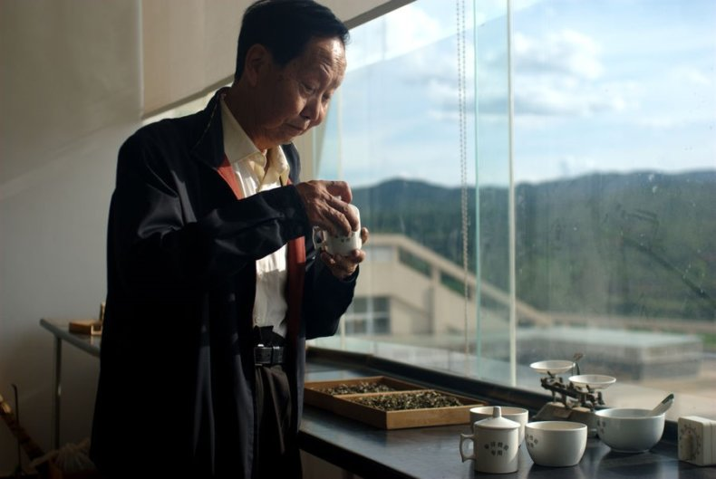

|
Все листья сорвали сборщицы…
Поэт Мацуо Басе
|
| Чай | Посуда | Коллекционные чаи |
|

Хайваньский чайный завод — 海湾 — Haiwan Датой создания чайного завода «Хайвань» можно назвать октябрь 1999 г. Его основателем стал Цзоу Бин Лян, бывший технолог и непосредственно управляющий Мэнхайской чайной фабрики, а также Лу Гуолинг. 30-летний опыт работы Бин Ляна позволил ему пройти весь путь от обычного чаевода, до управленческих позиций. Именно он был одним из создателей искусственного состаривания пуэра, а также многих рецептов завода «Мэнхай». Весь свой опыт он в последующем реализовал на своей фабрике. На сегодняшний день завод располагается в Куньмине, округе Мэнхай, уезде Аньнине. Его специализация – производство шэн и шу пуэров. Площадь его занимает порядка 50 тыс. кв. м. Чайные угодья, с которых собирают сырье, располагается в горах Юньшоу, на юге Сишуаньбаньна. В год фабрика перерабатывает порядка 3000 тонн получаемого сырья и производит около 1600 тонн чая, как прессованного, так и рассыпного. Он легко узнаваем по логотипу на обертке в виде трех подсолнухов. Также не сложно и по цвету понять, что за чай перед вами – зеленые надписи говорят о том, что это шэн пуэр, красные указывают на шу пуэр. В настоящeе время фабрика имеет несколько собственных брендов, под которыми и выпускает свою продукцию. Самой известной является «Лао Тун Чжи», что в переводе означает «Старый Товарищ». Также довольно известными марками можно назвать и «Хайвань», «Цзяця». Отдельного внимания заслуживает сырье, из которого готовится хайваньский пуэр. В первую очередь это листья и почки с вековых деревьев из экологически чистой местности. Купажи всегда включает в себя средний и крупный размер листа, молодые и свежие почки. Именно это придает чаю неповторимый, насыщенный и яркий вкус. Ну, а девиз фабрики – «Чай для всего мира». И это действительно так, всегда отличное качество за умеренную цену. Стоит также отметить, что по инициативе Цзоу Бин Ляна завод имеет географическую раздробленность и располагается в разным местах, тем самым разделяясь на три основных производственных блока и образуя кластеры. Каждый из них представляет особую важность исходя их условий произрастания сырья, его сбора и обработки. Так например блок завода, располагающийся у гор Паша и Айни Юшо занимаются первичным сбором и обработкой получаемого сырья. Мэнхайский блок занимается непосредственно постферментацией и финальным приготовлением. А вот подразделение в Аньнине занимается финишной переработкой, прессовкой, упаковкой и другими предпродажными задачами. Сегодня на фабрике трудится около 140 человек. За счет высокого качества продукции, а также некоторых «реплик» мэнхайских рецептов, автором которых был в то время Цзоу Бин Лян, завод Хайвань Стал достойным конкурентом фабрике Мэнхай. В 2003 году завод Хайвань получил специальный сертификат КНР, который позволяет самостоятельно заниматься операциями по экспорту и импорту, тем самым расширив горизонты распространения своего чая. Так около 65-70% всей готовой продукции уходит в Тайвань, Японию, Гонконг, США и Европу, и это число с каждым годом растет. Также фабрика может похвастаться огромным количеством всевозможных наград, полученных как на региональном, так и на международном уровне. За счет ежегодного увеличения экспорта пуэра в 2006 году руководство завода усовершенствовало и модернизировало свое предприятие и вывело его на новый уровень. В основном здании завода, где перерабатывается мао ча, существуют два крыла – одно для ферментированного сырья, а другое для сырого. Все это органично и эргономично объединяется в коридоры из стекла, которые разделяются согласно этапам производства пуэра. Всё полученное сырье проходит строгий контроль и отбор по рецептурам, которые были созданы лично Бин Ляном, после чего готовится и отправляется на упаковку. |